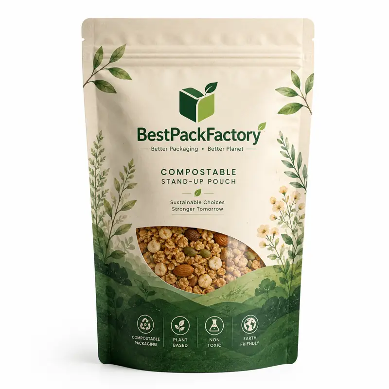

Eco-friendly, biodegradable, and compostable stand up pouches for coffee, tea, snacks, and dry food.
BestPackFactory supplies this product for sustainable brands, organic food companies, and eco-conscious retailers. We support custom size, material structure (NK, NKME, Kraft), artwork, and home/industrial compostable options.
| Business Model | B2B RFQ only, no retail checkout |
| MOQ | 500 PCS |
| Customization | Size, material (Bio-based), logo, color, finish, certification logo |
| Best For | Sustainable brands, coffee roasters, snack brands and health food companies |
| Contact | Lisa Wulisa@colorprintingpackage.comWhatsApp +86 158 8653 0985 |
Are these home compostable?
We offer both Home Compostable (OK Compost Home) and Industrial Compostable options. Please specify your requirement in the RFQ.
Do they have a high barrier?
We use metallized compostable films (NKME) to provide a high moisture and oxygen barrier compared to standard bio-plastics.
What is the shelf life?
Typically 12–18 months in a cool, dry environment. The compostable materials are designed to break down in composting conditions.
The table below is written for industrial RFQ comparison. Barrier properties of compostable films vary; final spec is confirmed by material data sheets.
| Material structure | NK 20µm / NKME 20µm / PBS 40µm; Kraft 50gsm / NKME 20µm / PLA 40µm |
|---|---|
| Certification | TUV AUSTRIA Home Compostable; EN 13432 / ASTM D6400 compliant |
| Barrier target | OTR ≤ 5.0 cc/m²·day; WVTR ≤ 5.0 g/m²·day for sustainable films |
| Zipper type | Compostable PE or PLA zipper, 6–8 mm width |
| Seal strength | ≥ 25 N / 15 mm |
| Typical capacity | 100g, 250g, 500g, 1kg; custom volume confirmed by density test |
| Bottom style | Stand-up pouch (Doyen/K-seal) / Flat bottom / Box pouch |
| Surface finish | Natural Kraft, Matte, Glossy Bio-film, Spot UV (Bio-based) |
| Printing registration tolerance | ±0.5 mm for bio-film printing |
| Recommended test | Seal integrity test + Compostable material certification verification |
| MOQ | 500 PCS per custom size / artwork |
| Artwork file | AI / PDF / PSD accepted; vector logo required; 3 mm bleed |
| Color tolerance | ΔE ≤ 4.0 (Bio-films may have slight color shifts) |
| Dimension tolerance | ±2 mm for pouch size |
| Quality inspection | AQL 2.5 for major defects; random batch composting simulation |
| RFQ data required | Size, product weight, composting requirement, artwork, quantity, destination |
Click below to contact us quickly by WhatsApp or email. We can help with dieline, samples, printing, materials and worldwide shipping.
💬 Chat on WhatsApp ✉ Email Inquiry lisa@colorprintingpackage.com